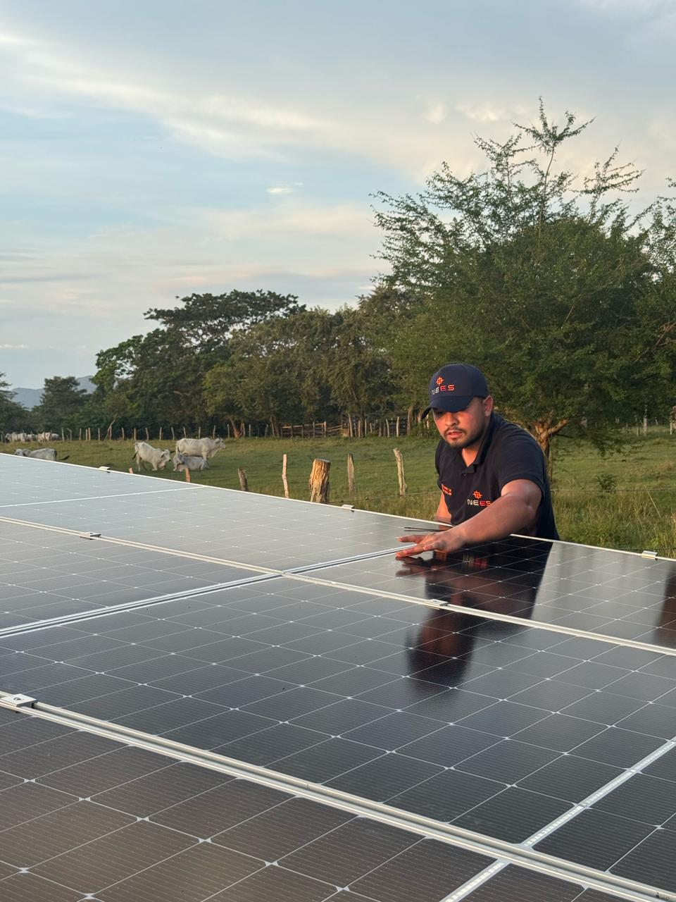
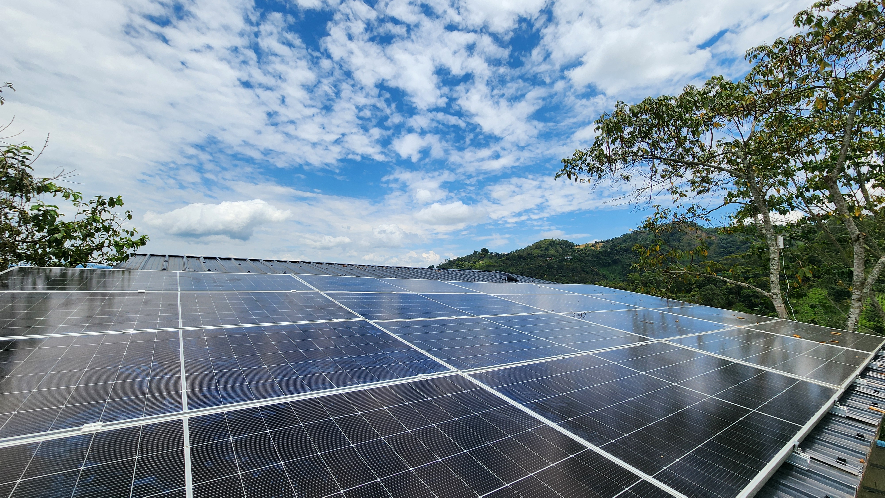
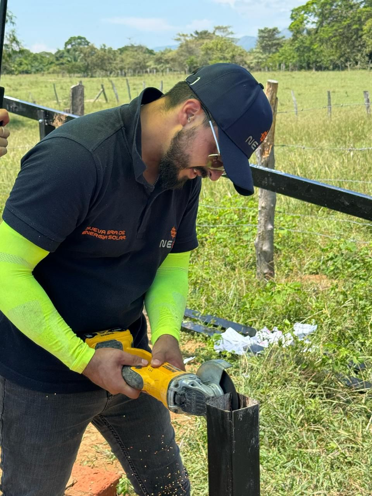

Sistemas solares para casas
Ideal si quieres reducir tu factura de energía y empezar a generar tu propia electricidad desde el techo de tu casa.

Diseñamos e instalamos sistemas solares a la medida para que tengas energía estable, reduzcas costos y dependas menos de la red eléctrica.
Muchas propiedades rurales, turísticas y negocios pequeños dependen de una red inestable o pagan facturas cada vez más altas. En NEES te ayudamos a entender qué sistema necesitas y te acompañamos desde el diseño hasta la instalación.
Cortes de energía que llegan en el peor momento
Facturas de luz cada vez más altas
Zonas rurales con red eléctrica inestable o ausente
Cabañas o fincas que necesitan energía autónoma
Dudas sobre qué sistema solar comprar
Miedo a invertir en algo mal dimensionado
Nuestras soluciones
Cada solución se calcula según tu consumo, tu ubicación y tu presupuesto.
Ideal si quieres reducir tu factura de energía y empezar a generar tu propia electricidad desde el techo de tu casa.
Pensado para propiedades rurales o turísticas que necesitan energía estable así la red eléctrica sea débil o esté lejos.
Combina la red eléctrica con baterías que guardan energía, para que no te quedes sin luz cuando haya un corte.
Funciona de forma independiente, sin necesidad de estar conectado a la red eléctrica. Ideal para zonas aisladas.
Reduce los costos de energía de tu negocio y protégelo de los cortes que afectan tus ventas o tu operación diaria.
Revisamos el estado de tu sistema solar para que siga funcionando bien y siga rindiendo como el primer día.
Cómo funciona
Nosotros te guiamos paso a paso para que tomes una buena decisión.
Nos escribes por WhatsApp y nos cuentas qué tipo de propiedad tienes y qué buscas resolver.
Analizamos cuánta energía usas y las condiciones de tu propiedad para dimensionar bien el sistema.
Te presentamos una propuesta clara, sin tecnicismos, ajustada a tu presupuesto real.
Hacemos la instalación y seguimos disponibles después, por si surge cualquier duda.
Casos reales
Cada propiedad tiene una necesidad distinta. Estos casos muestran cómo una solución solar puede adaptarse a cabañas turísticas, viviendas con cortes de luz, fincas productivas y bombeo de agua en zonas rurales.
Cabaña A-Frame 100% Off-Grid · La Vega
Una solución para propiedades turísticas que necesitan operar de forma autónoma, mantener sus amenidades disponibles y no depender de la red eléctrica.
Ideal para cabañas, glampings, ecohoteles y Airbnb rurales.
Sistema híbrido con respaldo automático · La Vega
Una solución para propiedades que sí tienen red eléctrica, pero necesitan continuidad cuando la energía falla. El sistema combina red, solar y batería para reducir interrupciones.
Ideal para casas rurales, fincas de descanso y propiedades con amenidades sensibles a cortes.

En construcciónSistema off-grid de gran capacidad · Cundinamarca
Una solución pensada para operar aislada de la red, alimentar necesidades de obra y soportar cargas futuras de una finca productiva.
Ideal para fincas productivas, obras rurales, maquinaria y proyectos con crecimiento futuro.
Bombeo solar autónomo 60 m · Suárez, Tolima
Una solución práctica para extraer agua subterránea usando energía solar, pensada para consumo, riego y ganadería en zonas rurales.
Ideal para fincas ganaderas, agricultura, riego y pozos profundos.
No todos los proyectos necesitan el mismo sistema. En NEES revisamos tu consumo, ubicación, presupuesto y nivel de autonomía para diseñar una solución que tenga sentido para tu propiedad.
Quiero saber qué solución necesitoBeneficios
Ahorro y control del consumo
Energía de respaldo ante cortes
Mayor autonomía energética
Ideal para zonas rurales
Aumenta el valor de tu propiedad
Energía limpia y silenciosa
Diseño a la medida de tu consumo
Acompañamiento antes, durante y después

Por qué NEES
Para entender mejor
Tres formas de aprovechar el sol, explicadas sin tecnicismos.
Conectado a la red eléctrica. Tus paneles generan energía y reducen lo que pagas en la factura. Ideal si solo quieres ahorrar.
Conectado a la red, pero con baterías propias. Cuando se va la luz, tus baterías te respaldan. Ideal si quieres ahorro y respaldo.
Totalmente independiente de la red. Genera y almacena su propia energía. Ideal para fincas, cabañas o zonas donde no llega la red.
Preguntas frecuentes
Depende del tamaño de tu propiedad, tu consumo y si quieres baterías o no. Por eso primero revisamos tu caso y te damos una cotización ajustada a tu necesidad real, no un precio genérico.
Sí. De hecho, las zonas rurales y fincas son uno de los casos donde la energía solar tiene más sentido, especialmente cuando la red eléctrica es débil o no llega.
Sí, si tu sistema incluye baterías (sistema híbrido u off-grid). Las baterías guardan energía durante el día para que la sigas usando cuando se corte la red.
Un sistema sin baterías (on-grid) solo te ayuda a ahorrar en la factura, pero si se va la luz, te quedas sin energía igual. Un sistema con baterías te da respaldo: sigues teniendo energía aunque la red falle.
No necesariamente. En la mayoría de los casos el sistema solar se conecta a tu instalación actual. Si algo necesita ajustarse, te lo explicamos antes de instalar, sin sorpresas.
Los paneles solares suelen tener una vida útil larga, de varios años de buen desempeño. Los inversores y baterías tienen su propia vida útil, y te explicamos esto con claridad antes de instalar.
Sí. Antes de recomendarte un sistema, revisamos tu consumo y las condiciones de tu propiedad, ya sea con la información que nos compartes o con una visita, según el caso.
Nos sirve saber qué tipo de propiedad tienes (casa, finca, cabaña o negocio), qué aparatos quieres alimentar y, si la tienes, tu factura de energía. Con eso ya podemos empezar a ayudarte.
Cuéntanos qué necesitas y revisamos contigo la mejor opción para tu casa, finca, cabaña o negocio.
Hablar por WhatsApp